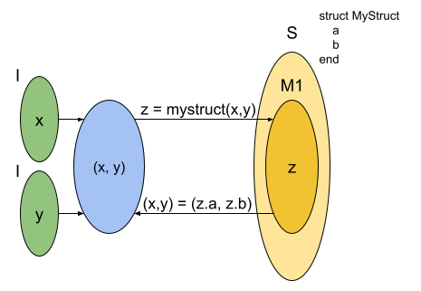

Set Element Generation
MappedSet contains mappings that associate each elements in the domain and the codomain. This page explains how to use the mappings to generate elements from one set to another.
Element Generation Overview
Set element generation works only with MappedSet among other set types in SetBuilders. MappedSet is a set created with four elements: domain, codomain, forward-map, and backward-map.
To demonstrate the element generations using forward mapping, as well as backward mapping, the following sets are prepared.
struct MyStruct
a
b
end
I = @setbuild(Integer)
S = @setbuild(MyStruct)
M1 = @setbuild(
(x, y) in I, # domain: a pair of integer values
z in S, # codomain: an instance of a MyStruct type
z = mystruct(x, y), # forward mapping: MyStruct z from the pair in the domain
(x, y) = (z.a, z.b),# backward mapping: The domain is recovered from MyStruct fields
mystruct=MyStruct # Let SetBuilders know the name of mystruct
)The following diagram depicts the mappings between the domain and the codomain of set M1.

Set I is a set of Julia Integer type. Set S is a set of MyStruct user-defined type. Set M1 is a MappedSet from a pair of I (domain) to S (codomain).
The third argument "z = mystruct(x, y)" defines "forward mapping" from the domain to the codomain. The fourth arguemnt "(x, y) = (z.a, z.b)" defines "backward mapping" from the codomain to the domain. Finally, the last argument "mystruct=MyStruct" let SetBuilders know what "mystruct" is.
Function fmap generates set elements in codomain using the "forward mapping" at the third argument, and bmap generates set elements in domain using the "backward mapping" at the fourth element.
The function signature of the two mapping functions is:
fmap(<set>, <element(s)>) # generates element(s) in codomain
bmap(<set>, <element(s)>) # generates element(s) in codomainThe element(s) at the second argument should be a member of the set at the first argument. Otherwise, the mapping will fail.
Multiple elements can be specified at the second argument by using Julia Vector type, or [] operator. If a Vector is used, it will be interpresed as multiple elements. If an element is a type of Vector, then, it should be wrapped in a Vector like, [[elems...]].
When a single element is specifed at the second argument and the number of output elements is also a single element, the output of the mapping function will be the single element. If there are more than one elements output, then the elements will be wrapped in a Vector.
Forward mapping (fmap)
Forward mapping maps from the elements in the domain to the ones in codomain.
julia> elem1 = fmap(M1, (1, 1)) # A domain element (1, 1) is mapped to MyStruct(1, 1)
MyStruct(1, 1)
julia> elem1 == MyStruct(1, 1)
true
julia> elem2 = fmap(M1, [(1,1), (2,2)]) # Two domain elements are mapped to two codomain elements
2-element Vector{Any}:
MyStruct(1, 1)
MyStruct(2, 2)
julia> elem3 = fmap(M1, (0.1, 0.1)) # No element is generated because 0.1 is not Integer type
julia> elem3 isa Nothing
trueelem1 is generated from (1, 1) domain element by appling the forward mapping "mystruct(x, y)".
A vector of a two pairs generated in elem2 by specifying a vector at the second argument of fmap.
elem3 is nothing indicating that no element is generated because 0.1 is not a member of set I.
Backward mapping (bmap)
Backward mapping maps from the elements in the codomain to the ones in domain.
The usage of bmap is exactly the same to fmap except the direction of generation.
julia> elem4 = bmap(M1, MyStruct(1, 1))
(1, 1)
julia> elem4 == (1, 1)
true
julia> elem5 = bmap(M1, MyStruct(0,1, 0.1))
2-element Vector{Any}:
MyStruct(1, 1)
MyStruct(2, 2)
julia> elem3 = fmap(M1, (0.1, 0.1)) # No element is generated because 0.1 is not Integer type
julia> elem3 isa Nothing
true